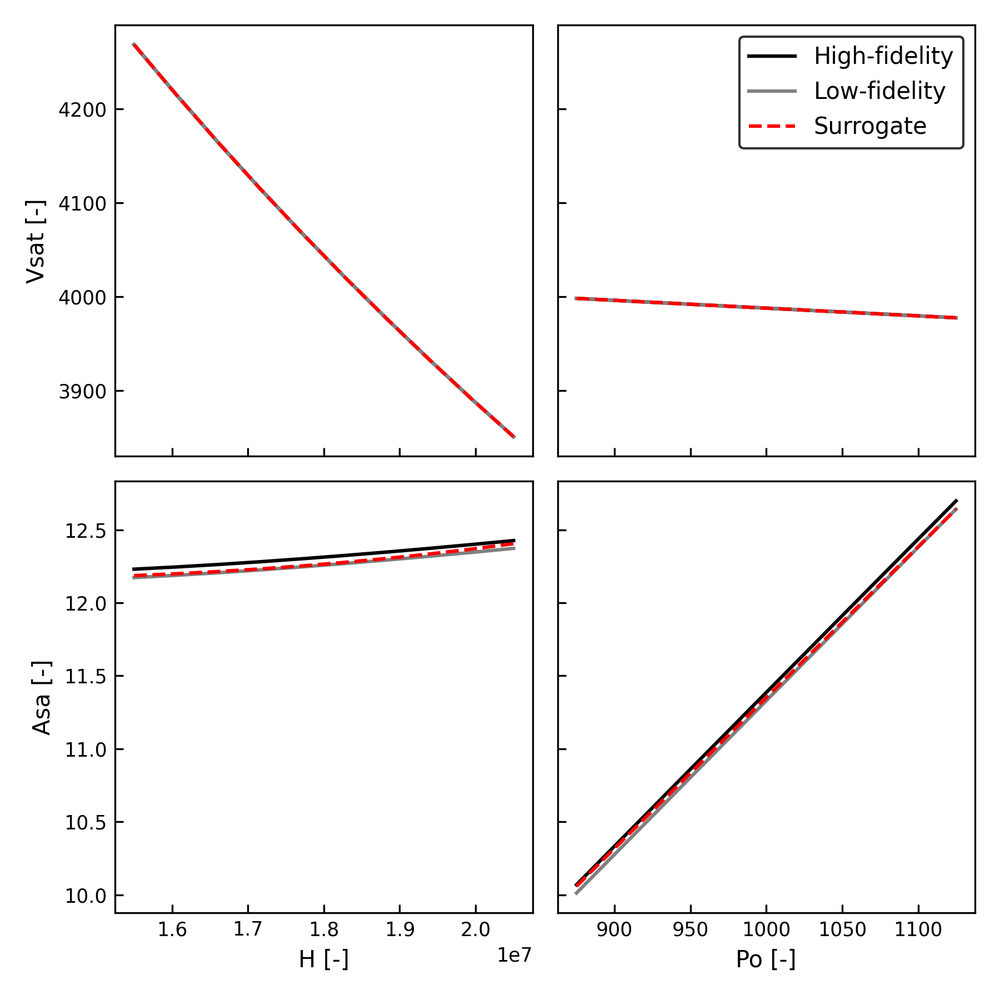

Examples
Two component system
Here is a simple example of a two-component multidisciplinary system.
import numpy as np
from amisc import System
def fun1(x):
y = x * np.sin(np.pi * x)
return y
def fun2(y):
z = 1 / (1 + 25 * y ** 2)
return z
system = System(fun1, fun2)
system.inputs()['x'].update_domain((0, 1))
system.outputs()['y'].update_domain((0, 1))
system.fit()
x_test = system.sample_inputs(10)
y_test = system.predict(x_test)
Random variable
Here is an example of interpolating a function of a random variable \(x\sim U(-1, 1)\). We manually construct the Variable and assign it a PDF. Then, we define the Component model and its inputs and outputs. Finally, we construct the MD system (which has just one component) and train the surrogate.
from amisc import Component, System, Variable
def fun(inputs):
return {'y': inputs['x'] ** 2}
x = Variable(distribution='U(-1, 1)')
y = Variable()
component = Component(fun, x, y, data_fidelity=(2,))
system = System(component)
system.fit()
system.predict({'x': 0.5}) # {y: 0.25}
data_fidelity parameter sets the maximum refinement level for the surrogate.
Fire detection satellite
Here is an example of a three-component fire detection satellite system from Chauduri (2018):
 We define the system in a yaml configuration file and load the
We define the system in a yaml configuration file and load the System object using a helper function (see the source code for details). Since the fire-sat system has complicated couplings between models, we generate a test set and estimate the coupling variable bounds while training the surrogate. Finally, we plot some diagnostics to determine the performance of the surrogate.
from amisc.examples.models import fire_sat_system
system = fire_sat_system()
xtest = system.sample_inputs(100, use_pdf=True) # --> (100, xdim)
ytest = system.predict(xtest, use_model='best') # --> (100, ydim)
system.fit(test_set=(xtest, ytest), estimate_bounds=True)
print(f'Inputs: {system.inputs()}')
print(f'Outputs: {system.outputs()}')
# Plots
input_vars = ['H', 'Po']
output_vars = ['Vsat', 'Asa']
system.plot_allocation()
system.plot_slice(input_vars, output_vars, show_model=['best', 'worst'], random_walk=True)
plot_slice():

We see that the model has a smooth response over the inputs, and our surrogate is able to accurately approximate the high-fidelity model.
Field quantity
A field quantity is specified as a Variable (just like a scalar), except it is given a Compression map that tells amisc how to reduce the field quantity to a set of "latent" coefficients over which to build the surrogate approximation. This would be desirable if you want to approximate the output of a high-dimensional solution, for example, from a PDE mesh.
In this example, we generate a random data matrix to simulate a high-dimensional field quantity, and construct a rank-4 SVD compression map. Note, we must provide the coordinates (Cartesian or otherwise) on which the field quantity is defined. We then approximate the field quantity as a function of the x scalar input.
import numpy as np
from amisc import Component, System, Variable, to_model_dataset
from amisc.compression import SVD
def my_model(inputs):
"""Compute a field quantity as a function of `x`."""
field = np.sin(inputs['x'] * np.linspace(0, 1, 100))
return {'f': field}
dof = 100 # Number of degrees of freedom (i.e. size of the field qty)
num_samples = 50 # Number of samples
data_matrix = np.random.rand(dof, num_samples)
field_coords = np.linspace(0, 1, dof)
compression = SVD(rank=4, coords=field_coords, data_matrix=data_matrix)
scalar = Variable('x', domain=(0, 1))
field_qty = Variable('f', compression=compression)
model = Component(my_model, inputs=scalar, outputs=field_qty, data_fidelity=(2,))
system = System(model)
system.fit(max_iter=10)
xtest = system.sample_inputs(1000)
ytest = system.predict(xtest) # Will estimate the field qty in the latent/compressed space
# Reconstruct the full field quantity
ytest_reconstructed, _ = to_model_dataset(ytest, system.outputs())
field_qty variable). The to_model_dataset utility provided by amisc will do this for you.